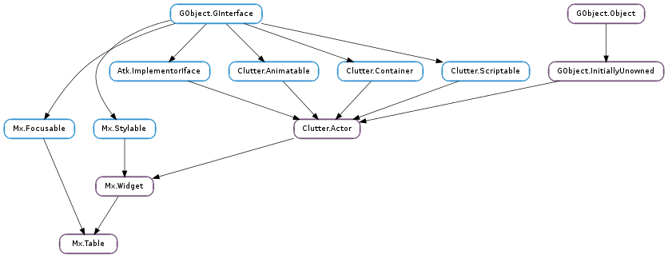

| static | new() |
| add_actor(actor, row, column) | |
| child_get_column(child) | |
| child_get_column_span(child) | |
| child_get_row(child) | |
| child_get_row_span(child) | |
| child_get_x_align(child) | |
| child_get_x_expand(child) | |
| child_get_x_fill(child) | |
| child_get_y_align(child) | |
| child_get_y_expand(child) | |
| child_get_y_fill(child) | |
| child_set_column(child, col) | |
| child_set_column_span(child, span) | |
| child_set_row(child, row) | |
| child_set_row_span(child, span) | |
| child_set_x_align(child, align) | |
| child_set_x_expand(child, expand) | |
| child_set_x_fill(child, fill) | |
| child_set_y_align(child, align) | |
| child_set_y_expand(child, expand) | |
| child_set_y_fill(child, fill) | |
| get_column_count() | |
| get_column_spacing() | |
| get_row_count() | |
| get_row_spacing() | |
| set_column_spacing(spacing) | |
| set_row_spacing(spacing) |
| Name | Type | Flags | Description |
|---|---|---|---|
| column-count | int | r | The number of columns in the table |
| column-spacing | int | r/w | Spacing between columns |
| row-count | int | r | The number of rows in the table |
| row-spacing | int | r/w | Spacing between row |
None
Bases: Mx.Widget, Mx.Focusable
The contents of this structure is private and should only be accessed using the provided API.
| Returns: | a new Mx.Table |
|---|---|
| Return type: | Clutter.Actor |
Create a new Mx.Table
| Parameters: |
|
|---|
Add an actor at the specified row and column
Note, column and rows numbers start from zero
| Parameters: | child (Clutter.Actor) – a Clutter.Actor |
|---|---|
| Returns: | the column of the child |
| Return type: | int |
Get the column of the child.
| Parameters: | child (Clutter.Actor) – a Clutter.Actor |
|---|---|
| Returns: | the column span of the child |
| Return type: | int |
Get the column span of the child. Defaults to 1.
| Parameters: | child (Clutter.Actor) – a Clutter.Actor |
|---|---|
| Returns: | the row of the child |
| Return type: | int |
Get the row of the child.
| Parameters: | child (Clutter.Actor) – A Clutter.Actor |
|---|---|
| Returns: | the row span of the child |
| Return type: | int |
Get the row span of the child. Defaults to 1.
| Parameters: | child (Clutter.Actor) – A Clutter.Actor |
|---|---|
| Returns: | An Mx.Align value |
| Return type: | Mx.Align |
Get the x-align value of the child
| Parameters: | child (Clutter.Actor) – A Clutter.Actor |
|---|---|
| Returns: | True if the child is set to x-expand |
| Return type: | bool |
Get the x-expand property of the child
| Parameters: | child (Clutter.Actor) – A Clutter.Actor |
|---|---|
| Returns: | True if the child is set to x-fill |
| Return type: | bool |
Get the x-fill state of the child
| Parameters: | child (Clutter.Actor) – A Clutter.Actor |
|---|---|
| Returns: | An Mx.Align value |
| Return type: | Mx.Align |
Get the y-align value of the child
| Parameters: | child (Clutter.Actor) – A Clutter.Actor |
|---|---|
| Returns: | True if the child is set to y-expand |
| Return type: | bool |
Get the y-expand property of the child.
| Parameters: | child (Clutter.Actor) – A Clutter.Actor |
|---|---|
| Returns: | True if the child is set to y-fill |
| Return type: | bool |
Get the y-fill state of the child
| Parameters: |
|
|---|
Set the column of the child
| Parameters: |
|
|---|
Set the column span of the child.
| Parameters: |
|
|---|
Set the row of the child
| Parameters: |
|
|---|
Set the row span of the child.
| Parameters: |
|
|---|
Set the alignment of the child within its cell. This will only have an effect if the the x-fill property is False.
| Parameters: |
|
|---|
Set x-expand on the child. This causes the column which the child resides in to be allocated any extra space if the allocation of the table is larger than the preferred size.
| Parameters: |
|
|---|
Set the fill state of the child on the x-axis. This will cause the child to be allocated the maximum available space.
| Parameters: |
|
|---|
Set the value of the y-align property. This will only have an effect if y-fill value is set to False.
| Parameters: |
|
|---|
Set y-expand on the child. This causes the row which the child resides in to be allocated any extra space if the allocation of the table is larger than the preferred size.
| Parameters: |
|
|---|
Set the fill state of the child on the y-axis. This will cause the child to be allocated the maximum available space.
| Returns: | the number of columns |
|---|---|
| Return type: | int |
Retrieve the current number of columns in table
| Returns: | the spacing between columns in device units |
|---|---|
| Return type: | int |
Gets the amount of spacing between columns.
| Returns: | the number of rows |
|---|---|
| Return type: | int |
Retrieve the current number rows in the table
| Returns: | the spacing between rows in device units |
|---|---|
| Return type: | int |
Gets the amount of spacing between rows.